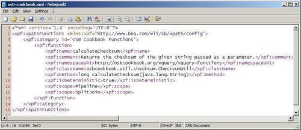
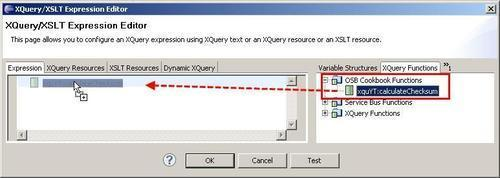
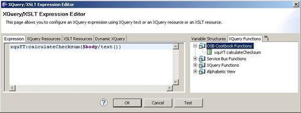

In this recipe, we will show how to implement custom XPath functions, which extends the collection of XPath functions available with the OSB platform. We will use the same functionality that we used in the Using the Java Callout action to invoke Java code recipe, but now make the calculate checksum functionality available as an XPath function.
You can import the OSB project containing the base setup for this recipe into Eclipse OEPE from \chapter-9\getting-ready\using-custom-xpath-function.
First we have to create the Java functionality we like to expose as a custom XPath function. We will reuse the same Java class we used in the Using the Java Callout action to invoke Java code recipe which is shown here:
package osbcookbook.util.checksum;
import java.util.zip.CRC32;
import java.util.zip.Checksum;
public class ChecksumUtil {
public static long calculateChecksum(String data) {
Checksum checksum = new CRC32();
checksum.update(data.getBytes(), 0, data.getBytes().length);
return checksum.getValue();
}
}
A JAR with this class is available in \chapter-9\getting-ready\misc\osb-checksum-util.jar.
Next, we need to configure the XPath function on the OSB server and map it to the calculateChecksum method of the ChecksumUtil class. The configuration for the XPath functions is held in the [WL_HOME]/Oracle_OSB1/config/xpath-functions. Perform the following steps in an Explorer window.
[WL_HOME]/Oracle_OSB1/config/xpath-functions folder. osb-built-in.xml file and paste it as a new file called osb-cookbook.xml which will hold the definition of the custom XPath function. osb-cookbook.xml file in an Editor.<xpf:function> elements and add our function as shown in the following screenshots:
osb-checksum-util.jar from the \chapter-9\getting-ready\misc to the [WL_HOME]/Oracle_OSB1/config/xpath-functions folder.Now let's use our new XPath function. In Eclipse OEPE, perform the following steps:
body into the In Variable field.
$arg-string in the parameter list by $body/text() and click OK.
Now let's test the proxy service by performing the following steps in the Service Bus console:
proxy folder inside the using-custom-xpath-function project. This is some text on which the Checksum will be calculated! into the Payload field and click Execute. 4265366956 as in the recipe with the Java Callout action.We have seen how we can extend the set of XPath functions available on the OSB platform by custom XPath function. A custom XPath function is implemented by some Java code. In order to map the Java functionality to the custom XPath function, the Java code needs to be exposed as a public static method in a public Java class.
The Java method should not produce side-effects; for example, it should not update any databases or participate in a global transaction. Such code should be invoked by a Java Callout action, as shown in the Using the Java Callout action to invoke Java code recipe.
A custom function will only appear in Eclipse OEPE if the OSB can find the Java class. Such a custom XPath function can be used both in inline XQuery expression, as shown with the Replace, and in XQuery resources, just as any other functions provided by the Oracle Service Bus.
The isDeterministic property in the configuration specifies whether the function is deterministic or non-deterministic. Deterministic functions always provide the same results whereas non-deterministic functions return the unique results. The XQuery standard recommends that functions should be deterministic, so that the XQuery engine is able to perform optimizations.